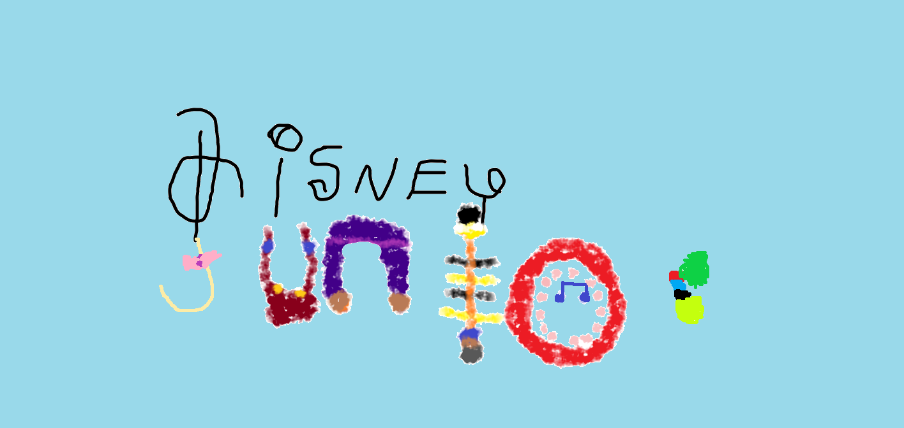
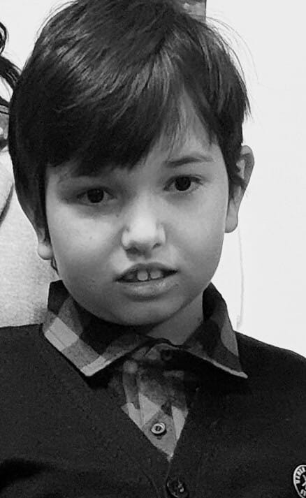
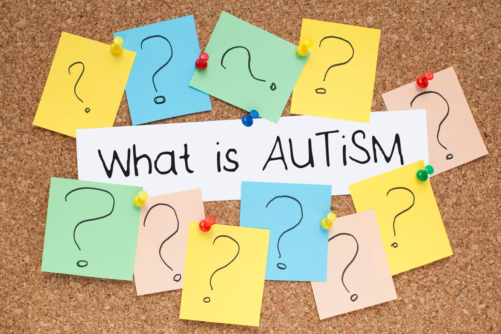
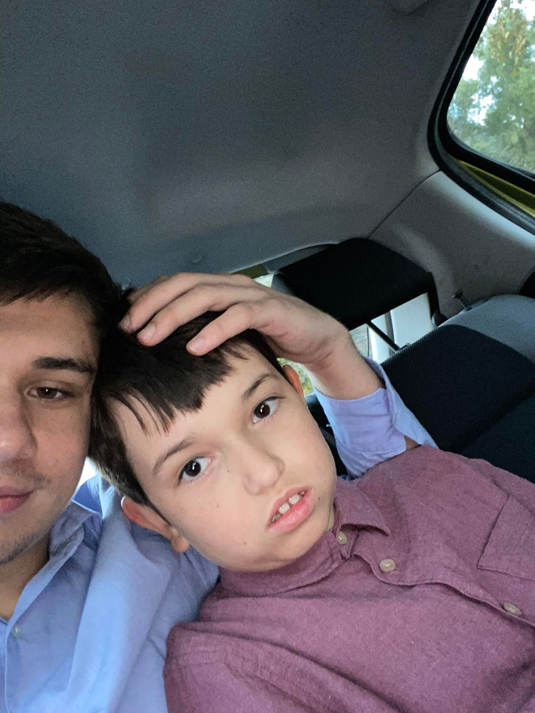
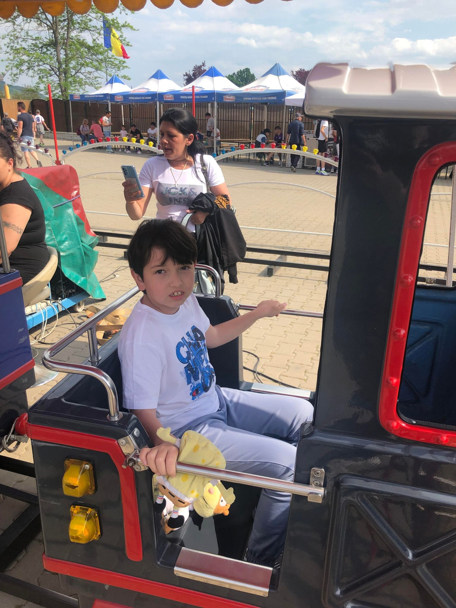

<!DOCTYPE html>
<html lang="en">

</html>

<head>
  <meta charset="UTF-8" />
  <meta http-equiv="X-UA-Compatible" content="IE=edge" />
  <meta name="viewport" content="width=device-width, initial-scale=1.0" />

  <title>Cris's World</title>
  <link rel="stylesheet" href="cris.css" />
  <script src="cris.js"></script>


  </div>
  <link rel="preconnect" href="https://fonts.googleapis.com/" />
  <link rel="preconnect" href="https://fonts.gstatic.com/" crossorigin />
  <link
    href="https://fonts.googleapis.com/css2?family=Inter:wght@400;500;700&family=Rubik:wght@400;500;600;700&display=swap"
    rel="stylesheet" />
  <link rel="stylesheet" href="https://cdnjs.cloudflare.com/ajax/libs/font-awesome/4.7.0/css/font-awesome.min.css"/>
  
  

</head>


<body>
  
    
  <div>
  <div class="mare">
    <div class="titlu2"><h1>Asociatia Cris's Happy World</h1></div>
  </div>
  
  </div>
  <div class="box">
   
  <nav class="navbar">
    
    <a href="contact.html">Detalii</a>
    
    <a href="Contract de sponsorizare Asociatia Cris's Happy World.doc">Contract</a>
    
    <a href="https://formular230.ro/asociatia-cris-s-happy-world">Formular</a>

  
    
    <div class="animation start-home"></div>
  </nav>
</div>
<div class="div1">
 
<p class="img"></p>
<p class="firstList">
  <ul class="li">
    <li><a href="#autism" id="ce-este-autismul">Ce este autismul?</a></li>
    <li><a href="#cauzele" id="cauzele-autismului">Cauzele autismului:</a></li>
    <li><a href="#simptome" id="simptome-si-diagnostic">Simptome si diagnostic:</a></li>
    <li><a href="#tipuri" id="tipuri-de-autism">Tipuri de autism:</a></li>
    <li><a href="#tratament" id="tratament-link">Tratament:</a></li>
    <li><a href="#terapie" id="terapie-link">Terapia cu celule stem:</a> </li>
    <li><a href="#preventieee" id="preventie-link">Preventie!</a></li>
  </ul>
</p>
<div>
<h2 id="autism"></h2>
<h2 class="title">Ce este autismul</h2>

<p></p>
<p>Tulburarea de spectru autist (TSA) este o manifestare complexa, asociata cu diferite simptome, care includ deficit persistent in comunicarea si interactiunea sociala, in contexte multiple, si modele de comportament restrictionate si repetitive.</p>

  <p>Autismul nu este efectul educatiei, nu este contagios, nu apare din cauze externe (alimentatie, vaccinuri), este prezent din momentul nasterii, dar se manifesta incepand cu primii ani de viata, prin semne caracteristice, si nu este un simplu refuz de a comunica. Creierul persoanelor care au tulburari din spectrul autist functioneaza altfel. Autismul, in toate formele lui, nu este o boala a omului modern, avand o rata de incidenta relativ constanta de-a lungul timpului, dar cu o reala tendinta de manifestare mai frecventa in ultimii 20 de ani.</p>
  
  <p>Multor parinti li se spune ca autismul este o tulburare de comportament. Copiii cu autism afiseaza comportamente confuze si, uneori, perturbatoare. Practica medicala si cercetarea au schimbat modul de abordare, astfel ca autismul este considerat o manifestare neuroatipica, o neurodiversitate cu efecte comportamentale.</p>
  
  <p>Nu exista o singura forma de autism, ci sunt multe subtipuri, influentate de factori genetici si de mediu. Persoanele cu autism au un set distinct de puncte forte si provocari, iar modalitatile prin care acestea invata, gandesc si rezolva probleme, la modul general, pot varia, de la situatii in care sunt foarte abile pana la incapacitati severe. Unele persoane cu TSA pot avea nevoie in permanenta de sprijin, in timp ce altele se pot descurca independent.</p>
  
  <p>Exista mai multi factori care pot influenta manifestarile din spectrul autist. Cel mai adesea, acestea sunt insotite de sensibilitati senzoriale si alte probleme medicale, cum ar fi tulburari gastro-intestinale, convulsii, epilepsie sau tulburari de somn, precum si provocari de sanatate mintala, cum ar fi anxietatea, depresia si problemele de deficit de atentie.</p>
  
  <p>Semnele de autism apar, de obicei, pana la varsta de 2-3 ani. Unele manifestari specifice pot sa fie sesizate chiar mai devreme si pot fi diagnosticate la 18 luni. Nu sunt rare cazurile in care simptomele apar chiar in primul an de viata. In fapt, se pare ca un numar destul de mic de copii, cu diferite forme de autism, se dezvolta cu adevarat normal in primul an de viata, pentru ca in jurul varstei de un an si jumatate-doi, sa intre intr-o perioada de regresie, care corespunde cu aparitia simptomelor de autism. Cercetarile si practica arata ca identificarea cat mai timpurie a semnelor de autism duce la rezultate pozitive, daca sunt aplicate metode terapeutice eficiente.</p>
</div>

<div>
  <h2 id="cauzele"></h2>
  <h2 class="title">Cauzele autismului</h2>

  <p>Se poate afirma cu certitudine ca nu exista o singura cauza care duce la tulburari de spectru autist. Cercetarile sugereaza ca autismul se dezvolta dintr-o combinatie de influente genetice si negenetice, legate de mediu. Acestea par sa creasca riscul ca un copil sa dezvolte autism, desi este important de retinut faptul ca existanta unui risc crescut nu este in sine o cauza. De exemplu, unele modificari ale genelor, asociate cu autismul, pot fi gasite la persoanele care nu au nicio tulburare de spectru autist. In mod similar, nu toti cei expusi factorilor de risc genetici sau de mediu vor dezvolta tulburarea. In fapt, majoritatea nu vor avea nicio tulburare de spectru autist.</p>

  <p>Cercetările arata ca exista o componenta genetica esentiala si diferite forme de TSA apar in familii. Modificarile anumitor gene cresc riscul ca un copil sa dezvolte autism. Astfel, daca un parinte poarta una sau mai multe dintre aceste modificari genetice, acestea pot fi transmise unui copil (chiar daca parintele nu are autism). Alteori, aceste modificari genetice apar spontan, in cursul dezvoltarii embrionare sau in sperma si/sau ovulul care se combina, pentru a crea embrionul. Din nou, cele mai multe dintre aceste modificari genetice nu vor cauza TSA viitorului copil, dar cresc riscul de aparitie.</p>

<p>Studiile si analizele mai arata ca anumite influente asupra mediului pot creste sau reduce riscul de autism la persoanele care sunt predispuse genetic la TSA, dar acestea sunt mereu foarte mici. Factorii de mediu care pot intra in discutie ca fiind elemente ce cresc riscul aparitiei simptomelor de spectru autist sunt:
  
  <ul class="li"><li>varsta avansata a oricaruia dintre parinti;</li>
  <li>complicatiile in timpul sarcinii sau la nastere, de exemplu, nasterea prematura inainte de 26 de saptamani si o greutate redusa la nastere, sarcinile multiple;</li>
  <li>sarcinile distantate la mai putin de un an;</li>
  <li>absenta necesarului de acid folic, inainte si la conceptie, dar si pe parcursul sarcinii:</li>
  <li>obezitatea si diabetul in timpul sarcinii;</li>
  <li>unele afectiuni virale, ale mamei, in timpul sarcinii.</li>
  </ul>
</p>
</div>
<p>Este dovedit ca nu exista nicio legatura intre <font color="red">vaccinurile pe care le fac copiii</font> pana la doi ani si aparita autismului. Acesta este un mit nascut si alimentat de faptul ca primele semne ale autismului apar in perioada vaccinurilor, la un an si jumatate-doi. Fiecare familie are o experienta unica, legata de aparitia simptomelor si de confirmarea diagnosticului de TSA, iar pentru unii, aceasta corespunde cu momentul vaccinarii. Cercetarile ample, realizate in ultimii 20 de ani, cu scopul de a identifica daca exista vreo legatura intre vaccinurile din copilarie si autism, au concluzionat faptul ca vaccinurile nu cauzeaza autism.</p>

<p>In replica, se pare ca unii factori de mediu, de la aportul de hormoni in alimentatie pana la unele medicamente (antidepresivele administrate in timpul sarcinii), unele metale, cum ar fi plumbul, dar si pesticidele si substantele chimice, aflate in compozitia materialelor plastice, precum si o categorie des utilizata de substante numite ftalati, au un rol in aparitia, la copii, a TSA.</p>

<p>Un alt element confirmat este faptul ca numarul baiatilor care au TSA este de cinci ori mai mare decat al fetelor.

  Ce efecte au factorii genetici si cei de mediu? Majoritatea par sa interfereze cu etape cruciale ale dezvoltării timpurii, intrauterine, a creierului. Unele par sa afecteze modul in care celulele nervoase ale creierului sau neuronii comunica intre ei, iar altii afecteza modul in care regiuni intregi ale creierului comunica intre ele.
 </p>

<div>
 <h2 id="simptome"></h2>
<h2 class="title">Simptome si diagnostic</h2>

 <p>Tulburarile de spectru autist pot arata diferit de la caz la caz. Caracteristica principala este, insa, aceea ca se intaleaza o dizabilitate care afecteaza modul de comunicare, comportamentul si interactiunea cu ceilalti. Simptomele pot sa fie de la foarte severe la foarte usoare.

  </p>
  <p>Unii copii pot prezenta aceste semne devreme, de la 6-7 luni, altii par sa aiba o dezvoltare normala in primele luni sau in primii doi ani de viata, apoi incep sa prezinte simptome. Este important de spus ca o analiza atenta identifica semnele TSA chiar si la copiii care, la o prima impresie, se inscriu in limitele dezvoltarii normale. Cel mai frecvent, primele semne ale TSA apar in jurul varstei de doi ani. Tulburarile de spectru autist sunt foarte variate, astfel ca unele dintre manifestari pot fi vizibile, evidente, in timp ce altele nu. Cele mai comune manifestari ale unui copil cu TSA sunt:
    <ul class="li">
    <li>interactioneaza dificil cu ceilalti, are probleme legate de abilitatile sociale;</li>
    <li>nu raspunde la prenume, pana la varsta de un an;</li>
    <li>nu este interesat de jucariile unui alt copil, nu relationeaza cu alti copii, nu interactioneaza cu alte persoane;</li>
    <li>se simte bine singur;</li>
    <li>evita sau respinge contactul fizic;</li>
    <li>evita contactul vizual;</li>
    <li>cand este suparat sau se loveste, nu cauta consolare;</li>
    <li>nu intelege emotiile;</li>
    <li>este posibil sa nu-si intinda bratele, pentru a fi ridicat.</li>
    </ul>
  </p>
</div>
  <p>
    <font color="red">Aproximativ 40% dintre copiii cu tulburari ale spectrului autist nu vorbesc deloc si intre 25-30% dezvolta anumite abilitati lingvistice in timpul copilariei, dar apoi le pierd. Cei mai multi au unele probleme de comunicare, cum ar fi:</font>
    <ul class="li">
    <li>vorbirea intarziata si abilitatile lingvistice limitate;</li>
    <li>vocea plata sau vocea cantatoare;</li>
    <li>echolalie – repeta mereu aceeasi fraza;</li>
    <li>probleme cu pronumele – vorbeste despre sine la persoana a III-a;</li>
    <li>nu gesticuleaza;</li>
    <li>are comportamente repetitive, cum ar fi clatinarea si fluturarea mainilor, balansarea, sariturile sau piruetele obsesive;</li>
    <li>au fixatii pe anumite activitati sau obiecte;</li>
    <li>schimbarile din rutina ii tulbura;</li>
    <li>sensibilitatea extrema la atingere, lumina si sunete puternice;</li>
    <li>absenta imitarii comportamentelor celor din jur;</li>
    <li>lipsa de coordonare si stangacia;</li>
    <li>impulsivitatea sau comportamentul agresiv cu sine si cu ceilalti.</li>
    </ul>

  </p>

  <p>
    Deficitele de reciprocitate social-emotionala pot varia, de la abordarea sociala anormala si esecul conversatiei la reducerea partajarii intereselor, emotiilor sau afectului, pana la refuzul de a initia raspunsuri la interactiunile sociale. Se mai pot observa o comunicare verbala si nonverbala slaba, anomalii la contactul vizual (refuza sa sustina privirea, priveste in alta parte cand vorbeste, are o privire fixa) si limbajul corpului sau un deficit in a intelege gesturi si, foarte important, o lipsa totala de expresii faciale. Actiunile repetitive pot fi miscari motorii stereotipe sau repetitive. Copiii cu tulburari autiste au interese foarte limitate, care sunt anormale ca intensitate sau concentrare, de exemplu, un atasament puternic fata de obiecte neobisnuite. Se mai poate manifesta hiper sau hipoactivitatea, de exemplu, indiferenta la durere, temperatura, raspuns anormal la sunete sau texturi, fascinatie pentru unele lumini sau miscari.
  </p>

  <p>
    Aceste simptome sunt efectul provocarilor care vin din lumea inconjuratoare si arata incapacitatea copilului de a-si folosi corpul si reactiile, pentru a raspunde. Nu toate aceste reactii indica TSA, dar cand acestea se asociaza, se repeta, devin dominante, ele pot indica o afectiune din spectrul autist.
  </p>

  <p>Diagnosticarea tulburarilor din spectrul autist se face dificil, deoarece nu exista teste de certitudine pentru a diagnostica tulburarea. Pentru a pune un diagnostic, medicii analizeaza istoricul de dezvoltare si comportamentul copilului. Un diagnostic de certitudine se poate pune in jurul varstei de doi ani, dar exista si situatii in care unii oameni nu sunt diagnosticati decat in adolescenta sau chiar mai tarziu.</p>

  <p>Semnele sunt un indicator in diagnosticare, iar monitorizarea prin evaluarea etapelor normale de dezvoltare legate de interactiune, joaca, vorbire, comportament si miscare trebuie realizate pentru fiecare copil in parte, in primii sai ani de viata. Parintii, bunicii, educatorii si alti ingrijitori pot participa la monitorizarea dezvoltarii. Orice deficit de dezvoltare trebuie corect analizat si evaluat, dar, pe de alta parte o astfel de situatie nu inseamna neaparat o tulburare din spectrul autist.</p>
<p>Screeningul de dezvoltare este un proces prin care trebuie sa treaca toti copiii de varste mici, in cursul vizitelor la medic, iar in cazul celor care au un risc crescut de a dezvolta TSA (prematuritate, greutate mica la nastere, TSA in familie, o afectiune de lunga durata), acesta trebuie realizat cu maxima atentie. Daca exista indicii care sa sugereze o posibila tulburare de spectru autist, evaluarea trebuie realizata de specialist, in colaborare cu logopedul si psihologul.</p>
<p>Diagnosticarea cat mai rapida este benefica si contribuie in foarte mare masura la recuperare. Nediagnosticati, copiii cu TSA devin adolescenti, apoi tineri care ar putea avea dificultati in dezvoltare, comunicare si intelegerea comportamentelor. In cazul lor, pot sa apara tulburari de atentie/hiperactivitate, tulburarea obsesiv-compulsiva, anxietatea, depresia sau tulburari de comportament.</p>

<div>
<h2 id="tipuri"></h2>
<h2 class="title">Tipuri de autism</h2>
<p class="tip"></p>
<p>Exista mai multe tipuri de autism, care se caracterizeaza prin manifestari comportamentale diferite. Fiecare dintre acestea poate afecta copilul cu diferite grade de intensitate.</p>
<p> <font color="red"> 1. Sindromul Asperger</font> – copiii cu acest sindrom tind sa se confrunte cu provocari atunci cand incearca sa inteleaga sau sa manifeste asa numitele indicii sociale. Una dintre caracteristicile acestui sindrom este dezvoltarea unui interes intens, anormal, adesea obsesiv, pentru unul sau doi subiecti specifici. Sindromul se mai numeste si tulburare de spectru autist de nivel 1. Majoritatea celor care au aceasta forma de TSA manifesta un nivel de inteligenta normal, uneori chiar ridicat, poseda abilitati verbale normale, dar comunicarea sociala este dificila. Sunt foarte sensibili din punct de vedere senzorial. Deseori, sindromul Asperger este diagnosticat gresit, ca fiind un deficit de atentie sau o tulburare obsesiv-compulsiva.</p>
<p>2. <font color="red">Sindromul Rett </font>– aceasta tulburare este una progresiva. Are caracteristici similare cu ale altor forme de autism, cum ar fi fluturarea repetata a bratului si a mainilor, problemele cu abilitatile motorii fine si grosiere, vorbirea intarziata. Acest tip de autism afecteaza doar fetele si poate fi evident de la varsta de sase luni. Se poate asocia cu alte tipuri de simptome (dificultati de respiratie, macinarea dintilor, intarzieri de crestere, convulsii si intarziere mintala), ce se pot accentua pe masura ce copilul inainteaza in varsta. Sindromul Rett nu este considerat de toti medicii ca fiind o tulburare din spectrul autist.</p>
<p>3. Tulburarea dezintegrativa a copilariei apare in jurul varstei de doi ani, la copiii care au avut pana in acel moment o evolutie care s-a incadrat in standarde. Poate surveni si dupa varsta de doi ani, oricand pana la 10 ani. Se mai numeste si sindromul Heller sau dementa infantila. La un moment dat, copilul incepe sa regreseze in ceea ce priveste comportamentul si interactiunea sociala. Acesta inceteaza sa mai interactioneze si sa mai vorbeasca, refuza contactul fizic si vizual. Pierderea abilitatilor este treptata, dar rapida, pe o perioada de sase-noua luni. Simptomele initiale consta in modificari inexplicabile ale comportamentului (anxietate, agitatie sau furie), fiind urmate de o pierdere a abilitatilor motorii, sociale si de comunicare. Copiii pierd adesea controlul intestinului sau al vezicii urinare si resping interactiunea sociala. Dupa un timp, regresia se opreste, dar copilul nu isi recapata niciuna dintre abilitatile pierdute.</p>
<p>Reprezinta o forma rara de autism, dar este una dintre cele care afecteaza profund parintii. Medicii sunt de parere ca exista o corelatie intre acest tip de autism si tulburarile care au dus la manifestari convulsive.
  Cauzele acestei tulburari nu sunt cunoscute, dar rezultatele investigatiilor arata ca circa jumatate dintre copiii diagnosticati cu acest sindrom au o electroencefalograma anormala. Cercetarile recente sugereaza drept posibile cauze o combinatie genetica favorizanta si posibilul stres prenatal sau de mediu, care pot duce la o depunere mai mare decat cea normala de amiloid la nivelul tesutului nervos cerebral, ceea ce duce la intreruperea transmisiei sinaptice normale. Cu toate acestea, trebuie remarcat faptul ca nu a fost dovedita nicio fiziopatologie clara. Incidenta este de 1 din 100.000 de copii, iar raportul dintre baieti si fete este de 8 baieti la 1 fata.</p>
<p>4. <font color="red"> Sindromul Kanner,</font> cunoscut si sub numele de tulburare autista clasica, se manifesta printr-o simptomatologie comportamentala standard a autismului – de la dificultati de intelegere sau comunicare, la contact vizual scazut sau absent, hipersensibilitate la stimuli (miros, lumina, zgomot, gust sau atingere) si o nevoie profunda de rutina. Acesti copii tind spre interiorizare accentuata si o lipsa de interes major pentru lumea din jur.</p>
<p>5. Tulburarea de dezvoltare pervaziva este considerata una dintre formele usoare de tulburare din spectrul autist. Produce intarzieri de dezvoltare a abilitatilor motorii, de vorbire si de interactiune sociala. Copiii cu acest tip de autism reusesc sa faca fata provocarilor mai usor decat cei cu alte tipuri de autism.
</p>
</div>

<div>
  <h1 id="tratament"></h1>
<h2 class="title">Tratament</h2>
<p class ="fratele"></p>
<p>Fiecare copil sau adult cu autism este un pacient unic, avand puncte forte si provocari carora trebuie sa le faca fata. In consecinta, nu se poate vorbi despre o terapie unica, fiecare caz in parte avand o schema de tratament personalizata. In conditiile in care multe dintre tipurile de autism se asociaza cu alte probleme de sanatate, cum sunt cele legate de tulburarile gastrointestinale, problemele de somn, uneori, convulsiile sau epilepsia, strategia terapeutica se orienteaza inclusiv spre ameliorarea acestor complicatii asociate.</p>
<p>La acestea se adauga terapiile specifice <font color="red">(Applied Behavioral Analysis – ABA), (Applied Behavioral Analysis – ABA),</font>care au ca scop imbunatatirea atentiei, stimularea proceselor de invatare si comunicare, insusirea unor comportamente si deprinderi sociale sau provocari motorii sau dobandirea unor alte abilitati, cum ar fi hranirea sau ingrijirea personala. Astfel, fiecare plan de tratament si de interventie, pentru oricare dintre formele de autism, este adaptat la nevoile specifice ale persoanei in cauza.</p>
<p>Trebuie spus ca nu exista „remedii” pentru autism, iar tulburarile din spectrul autist nu se vindeca, insa, instituite cat mai devreme si aplicate in mod sustinut, terapiile pot ajuta la ameliorarea simptomelor si la integrarea sociala. Evolutia pozitiva depinde de gradul de afectare si de tipul de sindrom autist. Unele persoane cu TSA pot raspunde foarte bine la terapie, in timp ce altele nu.</p>
<p>La terapie se adauga si o serie de tratamente alternative de sustinere. Acestea pot include doze mari de vitamine, terapia de eliminare a metalelor grele, oxigenoterapie, suplimente cu melatonina. Opinia specialistilor este impartita in ceea ce priveste aceste terapii complementare, care trebuie realizate cu acordul medicului si sub supravegherea acestuia.</p>
<p>Nu exista indicii care sa arate ca o dieta specifica ar putea fi utila in cazul TSA. Cu toate acestea, exista ideea ca un anumit stil alimentar ar putea fi util. Un fundament al dietei persoanelor cu autism consta in evitarea aditivilor artificiali (conservanti, coloranti si indulcitori artificiali). O alta abordare recomanda dieta fara gluten, insa cercetarile nu au dus la rezultate concludente fata de aceste strategii.</p>
<p>Extrem de eficiente sunt stabilirea unui protocol medical si mentinerea unei legaturi bazate pe incredere si colaborare cu medicul si terapeutii, in folosul copilului, iar apelarea la servicii de concierge medical este una dintre cele mai intelepte optiuni. Astfel, accesul catre medicii performanti este asigurat, iar traseul medical este usor determinat de <font color="red">catre un navigator dedicat familiei si copilului cu TSA.</font>
</div>
<p class="trenulet"></p>

<div>
  <h2 id="terapie"></h2>
<h2 class="title">Terapia cu celule stem</h2>
<p>O serie de studii si dovezi preclinice demonstreaza ca exista o imbunatatire a starii generale a persoanelor cu TSA, dupa tratamentul cu celule stem. Transplantul de celule pare sa duca la o recuperare functionala. Rezultatele in vivo au fost definitive si au aratat imbunatatiri semnificative. Terapia are, insa, o serie de limitari: este la inceput si sunt necesare studii complexe si aprofundate, pentru a se putea spune ca aceasta forma de tratament aduce o imbunatatire reala, pe termen lung, a persoanelor care au fost diagnosticate cu TSA.</p>
<p> <font color="red"> Este cert faptul ca terapia cu celule stem imbunatateste aportul de sange si oxigen in creier si stimuleaza regenerarea neuronilor si formarea de noi vase de sange.</font> Este cert faptul ca terapia cu celule stem imbunatateste aportul de sange si oxigen in creier si stimuleaza regenerarea neuronilor si formarea de noi vase de sange. Celulele stem contribuie la regenerarea substantei albe si la diminuarea simptomelor neurologice, concomitent cu o imbunatatire a functiilor cognitive.</p>
<p>S-au mai constatat o mai buna toleranta la alimente si o digestie imbunatatita, un contact mai bun cu copilul (mai ales vizual), mai putina hiperactivitate, un comportament mai relaxat, un raspuns ameliorat la solicitari, abilitati de comunicare verbala ameliorate si reducerea anxietatii, concomitent cu normalizarea somnului.</p>
</div>

<div class="preventie">
  <h2 class="title">Preventie!</h2>
  <h2 id="preventieee"></h2>
  <p class="paragraf">Cauzele exacte care duc la aparitia TSA nu sunt cunoscute cu certitudine, dar exista suficiente indicii pentru a se putea afirma ca unele anomalii genetice sunt principalul factor de risc. In consecinta, testele genetice si o corecta evaluare a riscului, mai ales in cazul persoanelor care au in familie persoane cu tulburari de spectru autist, sunt cea mai buna cale de evaluare corecta a riscului, ca masura de preventie cu adevarat eficienta. Testele genetice prenatale sunt recomandate pentru a detecta anomaliile genetice ale fetusului. De asemenea, acestea ajuta la determinarea sarcinilor cu risc crescut pentru anomalii fetale. Astfel de teste sunt recomandate tuturor femeilor gravide, indiferent de varsta sau de factorii de risc.</p>
  <p class="paragraf">La acestea se aduga eliminarea factorilor care sunt asociati cu un risc crescut de incidenta a cazurilor de TSA, respectiv consumul de medicamente in timpul sarcinii, un aport bun de acid folic inainte de sarcina si in timpul acesteia, evitarea alcoolului si prevenirea infectiilor virale in timpul perioadei de graviditate, prin vaccinare. Exista indicii care arata ca femeile insarcinate care fac rubeola au un risc foarte mare de a avea un copil care va dezvolta o forma de autism.</p>
  <p class="paragraf"><i>Desi tulburarile de spectru autist nu se vindeca, terapia poate ameliora substantial simptomele. Recuperarea copiilor este o munca de echipa, la care participa parintii, medicii, logopezii si psihologii, care, impreuna, pot contribui la adaptarea catre o viata cat mai apropiata de normal.</i></p>

</div>

<div>
  <p>Daca vrei sa aflii mai multe despre Cristian, <a href="contact.html"> <font color="red">poti apasa aici</font> </a> sau mergi la sectiunea "Detalii".
</div>
<footer>
  <div class="footer">
    <div class="row">
      <h3>De asemenea, te invit sa ma urmaresti si pe urmatoarele retele de socializare:</h3>
      <h3>Pe youtube fac live-uri zilnice, orice donatie va merge spre fratele meu.</h3>
      <div class="social-icons">
        <a href="https://www.facebook.com/radu.dulacioiu/"><i class="fa fa-facebook"></i></a>
        <a href="https://www.instagram.com/radudlc/"><i class="fa fa-instagram"></i></a>
        <a href="https://www.youtube.com/@profesoru1695/streams"><i class="fa fa-youtube"></i></a>
      </div>
    </div>
  </div>
</footer>
  
</body>
</script>
